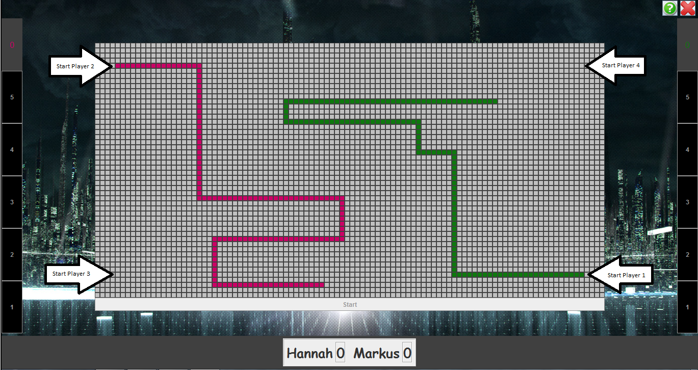
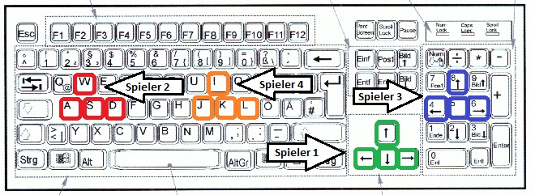

Tron
Tron
Tron ist ein Geschicklichkeitsspiel, bei dem es darum geht seine "Schlange" länger "unberührt" zu lassen, als die seines/r Gegner/s. Zunächst kann man bei den Einstellungen
entscheiden, wie groß das Spielfeld ist und wie schnell die Schlangen fahren. Als "Schlange" werden die Strahlen der Spieler bezeichnet, welche sich unaufhörlich fortbewegen
und eine Spur legen auf die man nicht mehr drauffahren kann. Der Spieler Nr. 1 kann einen Richtungswechsel seiner "Schlange" mit den Bewegungstasten hervorrufen. Bei dem Spieler
Nr. 2 sind die Tasten w,a,s,d dafür verantwortlich. Das Spiel ist beendet sobald einer der Schlangenköpfe auf ein Hindernis trifft. Hindernisse sind in diesem Fall zum Einem die "Schlangen"
der Gegner, oder sogar die Eigene, Und zum Anderem der Spielfeldrand. Wenn der Schlangenkopf auf eines dieser Hindernisse aufläuft, so ist das Spiel sofort beendet und
der Spieler, dessen "Schlange" ein Hinderniss erwischt hat, hat das Spiel verloren.

Zur Steuerung:

Weitere Spielanleitungen findest du
hier